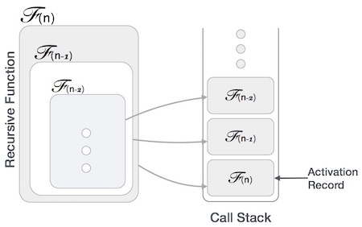

Some computer programming languages allows a module or function to call itself. This technique is known as recursion. In recursion, a fuction α either calls itself directly or calls a function β that in turn calls the original function α. The function α is called recursive function.
Example − a function calling itself.
int function(int value) {
if(value < 1)
return;
function(value - 1);
printf("%d ",value);
}
Example − a function that calls another function which in turn calls it again.
int function(int value) {
if(value < 1)
return;
function(value - 1);
printf("%d ",value);
}
A recursive function can go infinite like a loop. To avoid infinite running of recursive function, there are two properties that a recursive function must have −
Base criteria − There must be at least one base criteria or condition, such that, when this condition is met the function stops calling itself recursively.
Progressive approach − The recursive calls should progress in such a way that each time a recursive call is made it comes closer to the base criteria.
Many programming languages implement recursion by means of stacks. Generally, whenever a function (caller) calls another function (callee) or itself as callee, the caller function transfers execution control to callee. This transfer process may also involve some data to be passed from caller to callee.
This implies, the caller function has to suspend its execution temporarily and resume later when the execution control returns from callee function. Here, caller function needs to start exactly from the point of execution where it put itself on hold. It also needs the exact same data values it was working on. For this purpose an activation record (or stack frame) is created for caller function.
This activation record keeps the information about local variables, formal parameters, return address and all informations passed to called function.
One may argue that why to use recursion as the same task can be done with iteration. The first reason is recursion makes a program more readable and because of today's enhance CPU systems, recursion is more efficient than iterations.
In case of iterations, we take number of iterations to count the time complexity. Likewise, in case of recursion, assuming everything is constant, we try to figure out the number of time recursive call is being made. A call made to a function is Ο(1), hence the (n) number of time a recursive call is made makes the recursive function Ο(n).
Space complexity is counted as what amount of extra space is required for a module to execute. In case of iterations, the compiler hardly requires any extra space. Compiler keeps updating the values of variables used in the iterations. But in case of recursion, the system needs to store activation record each time a recursive call is made. So it is considered that space complexity of recursive function may go higher than that of a function with iteration.